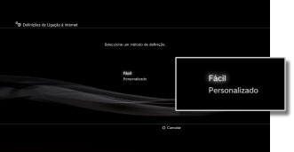
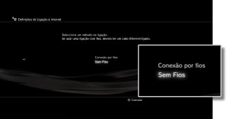
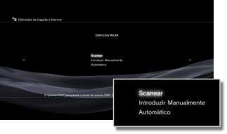
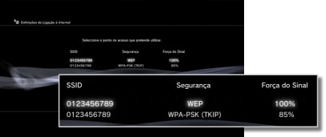
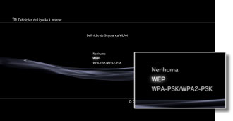
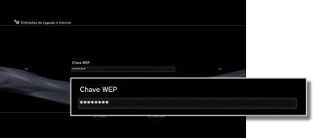

Definições de Ligação à Internet (conexão sem fios)
Esta definição está apenas disponível nos sistemas PS3™ equipados com a funcionalidade de WLAN.
Defina o método de ligação à Internet. As definições de ligação à Internet variam consoante o ambiente de rede e os dispositivos utilizados. O procedimento seguinte descreve uma configuração típica de ligação à Internet sem fios.
1. |
Verifique se as definições para o ponto de acesso foram completadas.
Verifique se há um ponto de acesso ligado a uma rede de com ligação à Internet perto do sistema. As definições para o ponto de acesso são tradicionalmente feitas num PC. Para detalhes contacte a pessoa que definiu ou que mantém o ponto de acesso.
|
2. |
Verifique se não está um cabo Ethernet ligado ao sistema PS3™.
|
3. |
Seleccione  (Definições) > (Definições) >  (Definições de Rede). (Definições de Rede).
|
4. |
Seleccione [Definições de Ligação à Internet].
Seleccione [Sim] quando surgir um ecrã de confirmação informando que será desligado da Internet.
|
5. |
Seleccione [Fácil].

|
6. |
Seleccione [Sem fios].

|
7. |
Seleccione [Scanear].
Será apresentada uma lista de pontos de acesso ao alcance do sistema PS3™.
Dependendo do modelo do sistema PS3™ que estiver a utilizar, pode ter a opção [Automático]. Seleccione [Automático] quando utilizar um ponto de acesso que suporte uma configuração automática. Se seguir as instruções no ecrã, as definições necessárias serão completadas automaticamente. Para mais informações sobre pontos de acesso que suportem configuração automática, contacte o seu revendedor local.

|
8. |
Seleccione o ponto de acesso que irá utilizar.
Um "SSID" é um nome de identificação atribuído aos pontos de acesso. Se não souber qual o SSID que deve utilizar ou se não for apresentado um SSID, peça assistência à pessoa que configurou ou mantém o ponto de acesso.

|
9. |
Verifique o SSID do ponto de acesso.
|
10. |
Seleccione as definições de segurança que irá utilizar.
Os tipos de definições de segurança variam consoante o ponto de acesso. Contacte a pessoa que configurou ou que mantém o ponto de acesso para obter informações sobre as definições que deve seleccionar.

|
11. |
Introduza a chave de encriptação.
A chave de encriptação é apresentada como [*]. Se não sabe a chave de encriptação, contacte a pessoa que definiu ou que mantém o ponto de acesso para assistência.

Quando terminar de introduzir a chave de encriptação e confirmar a configuração da rede será apresentada uma lista de definições.
Dependendo do ambiente de rede em utilização, poderão ser necessárias definições adicionais, como por exemplo, para PPPoE, servidor proxy ou endereço IP. Para detalhes sobre estas definições, consulte as informações fornecidas pelo seu fornecedor de serviço de Internet ou as instruções fornecidas com o dispositivo de rede.
|
12. |
Guarde as definições.
|
13. |
Teste a ligação.
Se seleccionar [Testar a Ligação], o sistema irá tentar estabelecer a ligação à Internet.
|
14. |
Confirme os resultados da ligação.
Se a ligação tiver sido bem sucedida, será apresentada informação sobre a rede.
|
Notas
- Se a ligação falhar, siga as instruções no ecrã para verificar as suas definições. Consulte também as informações do seu fornecedor de serviços da Internet e as instruções fornecidas com o dispositivo de rede utilizado.
- Se testar a ligação imediatamente após seleccionar [Automático] > [AOSS™] no passo 7, as definições de router poderão não ser concluídas e a ligação poderá falhar. Aguarde aproximadamente 1 ou 2 minutos antes de testar a ligação.